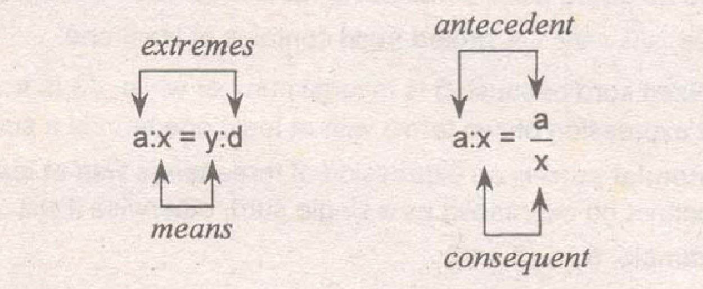

Let a, b, and c be real numbers, variables or algebraic expressions.
Closure property
Addition: $a+b$
Multiplication: $a \cdot b$
Commutative property
Addition: $a+b=b+a$
Multiplication: $a \cdot b=b \cdot a$
Associative property
Addition:
$(a+b)+c=a+(b+c)$
Multiplication: $(a \cdot b) \cdot c=a \cdot (b \cdot c)$
Identity property
Addition: $a+0=0+a=a$
Multiplication: $a \cdot 1=1 \cdot a=a$
Inverse property
Addition: $a+(-a)=0=(-a)+a$
Multiplication: $a\left( {{1 \over a}} \right) = 1 = \left( {{1 \over a}} \right)a$ with $a \ne 0$
Distributive property
Left: $a(b+c)=ab+ac$
Right: $(a+b)c=ac+bc$
In item 4, 0 is called an additive indentity while 1 is called a multiplicative identity. In item 5, $-a$ is known as additive inverse of a while ${1 \over a}$ is the multiplicative inverse of a.
Let a, b and c be real numbers, variables of algebraic expression.
| 1. Reflexive property | a = a |
| 2. Symmetric property | if a = b, then b = a |
| 3. Transitive property | if a = b and b = c, then a = c |
| 4. Substitution property | if a = b, then a can be replaced by b in any expression involving a |
| 5. Addition/Subtraction | if a = b, then a + c = b + c |
| if a = b, then a - c = b - c | |
| 6. Multiplication/Division | if a = b, then ac = bc |
| if a = b, then ${a \over c}={b \over c}$, with $c \ne 0$ | |
| 7. Cancellation property | if a + c = b + c, then a = b |
| if ac = bc and $c \ne 0$, then a = b |
Let a and b real numbers, variables or algebraic expression.
a + 0 = a and a - 0 = a
0 = 0
${0 \over a}=0$, $a \ne 0$
${a \over 0}$ is undefined
if ab = 0, then a = 0 or b = 0. This is known as Zero-Factor Property
the exponential notation states that if a is a real number, variable, or algebraic expression and n is a positive number, then:
$${a^n} = \underbrace{a \cdot a \cdot a \cdot \cdot \cdot a} \\ \ \ \ \ n\ \text{factors}$$
Properties:
${a^m} \cdot {a^n} = {a^{m + n}}$
Example: ${4^2}+{4^3}={4^{2+3}}={4^5}$
${{a^m} \over {a^n}}={a^{m-n}}$
Example: ${{x^8} \over {x^3}}={x^{8-3}}={x^5}$
${({a^m})^n}={a^{mn}}$
Example: ${({y^6})^2}={y^{6(2)}}={y^{12}}$
${(ab)^m}={a^m}{b^m}$
Example: ${(2x)^4}={2^4}{x^4}=16{x^4}$
${\left( {{a \over b}} \right)^m} = {{{a^m}} \over {{b^m}}}$
Example: ${\left( {{2 \over x}} \right)^4} = {{{2^4}} \over {{x^4}}} = {{16} \over {{x^4}}}$
${a^{{\raise0.5ex\hbox{$\scriptstyle m$} \kern-0.1em/\kern-0.15em \lower0.25ex\hbox{$\scriptstyle n$}}}} = \root n \of {{a^m}} $
Example: $4{x^{{\raise0.5ex\hbox{$\scriptstyle 5$} \kern-0.1em/\kern-0.15em \lower0.25ex\hbox{$\scriptstyle 3$}}}} = \root 3 \of {{{(4x)}^5}} $
${a^{ - m}} = {1 \over {{a^m}}}$
Example: ${x^{ - 5}} = {1 \over {{x^5}}}$
${a^0} = 1,\ a \ne 0$
Example: ${({x^5} + 2)^0} = 1$
In the expression, $\root n \of a $, n is called the index, a the radicand while the symbol $\sqrt {\ \ }$ is called the radical or radical symbol.
Properties:
$\root n \of a \cdot \root n \of b = \root n \of {ab}$
Example: $\root 3 \of {{8^2}} = {\left( {\root 3 \of 8 } \right)^2} = {(2)^2} = 4$
$\root n \of a \cdot \root n \of b = \root n \of {ab} $
Example: $\root 3 \of 5 \cdot \root 3 \of {675} = \root 3 \of {5(675)} = \root 3 \of {3375} = 15$
${{\root n \of a } \over {\root n \of b }} = \root n \of {{a \over b}},\ b \ne 0$
Example: ${{\root 3 \of {50} } \over {\root 3 \of {10} }} = \root 3 \of {{{50} \over {10}}} = \root 3 \of 5 $
$\root m \of {\root n \of a } = \root {mn} \of a $
Example: $\sqrt {\root 4 \of {15} } = \root 8 \of {15}$
${\left( {\root n \of a } \right)^n} = a$
Example: ${\left( {\root 6 \of {2x} } \right)^6} = 2x$
$\root n \of {{a^n}} = |a|$
Example: $\root 4 \of {{{( - 12)}^4}} = | - 12| = 12$, For n = even number
$\root n \of {{a^n}} = a$
Example: $\root 3 \of {{{( - 15)}^3}} = - 15$, For n = odd number
Surd is a radical expressing an irrational number. The surd is described after the index of the radical. For example, $\sqrt 3$ is a quadratic surd, $\root 3 \of 3$ is a cubic surd, $\root 4 \of 3$ is a quartic surd and so on.
Pure surd, sometimes called as entire surd contains no rational number and all its terms are surds. For example, $\sqrt 3 + \sqrt 2$. A mixed surd contains at least one rational number. $5\sqrt 3$ is a mixed surd because 5 is rational number while $\sqrt 3$ is a surd. A binomial surd is an expression of two terms with at least one term is a surd. For example, $5 + \sqrt 2$. A trinomial surd is an expression of three terms with a least two of them are surds and cannot be expressed as a single surd, otherwise it will become a binomial surd. Example, $5 + \sqrt 2 + \sqrt 3$.
Let x, y and z be real numbers, variables or algebraic expression.
Sum and difference of same terms or Difference of two squares:
$$(x + y)(x - y) = {x^2} - {y^2}$$
Square of a binomial:
$${(x + y)^2} = {x^2} + 2xy + {y^2}$$
$${(x - y)^2} = {x^2} - 2xy + {y^2}$$
Cube of a binomial:
$${(x + y)^3} = {x^3} + 3{x^2}y + 3x{y^2} + {y^3}$$
$${(x - y)^3} = {x^3} - 3{x^2}y + 3x{y^2} - {y^3}$$
Difference of two cubes:
$${x^3} - {y^3} = (x - y)({x^2} + xy + {y^2})$$
Sum of two cubes:
$${x^3} + {y^3} = (x + y)({x^2} - xy + {y^2})$$
Square of a trinomial:
$${(x + y + z)^2} = {x^2} + {y^2} + {z^2} + 2xy + 2xz + 2yz$$
if ${a \over y} = {x \over d}$, then $a:x = y:d$
if ${a \over b} = {c \over d}$, then ${a \over c} = {b \over d}$
if ${a \over b} = {c \over d}$, then ${b \over a} = {d \over c}$
if ${a \over b} = {c \over d}$, then ${{a - b} \over b} = {{c - d} \over d}$
if ${a \over b} = {c \over d}$, then ${{a + b} \over b} = {{c + d} \over d}$
if ${a \over b} = {c \over d}$, then ${{a + b} \over {a - b}} = {{c + d} \over {c - d}}$
Note in item (a), quantities a & d are called extremes and x & y are called means. If x = y, this is known as the mean proportional. In the ratio x/y, the first term x is called antecedent while the second term y is called the consequent.
If a polynomial in an unknown quantity x is divided by a first degree expression in the same variable, (x-k), where k may be any real or complex number, the remainder to be expected will be equal to the sum obtained when the numerical value of k is substituted for x in the polynomial. Thus,
$$\text{Remainder}=f(x) \\x \to k$$
If the polynomial is divided by (x-k) will result to a remainder of zero, then the value (x-k) is a factor of the polynomial. This is known as the Factor Theorem.
Both remainder theorem and factor theorem were suggested by a French Mathematician, Etienne Bezout (1730-1783).
Tips:
Least Common Denominator (LCD) - refers to the product of several prime numbers occuring in the denominators, each taken with its greatest multiplicity. For example: LCD of 8, 9, 12 and 15 is 360
What is the LCD of 8, 9, 12 and 15?
Soln:
$\eqalign{
& 8 = {2^3} \cr
& 9 = {3^2} \cr
& 12 = 3 \times {2^2} \cr
& 15 = 3 \times 5 \cr
& \text{LCD} = {2^3} \times {3^2} \times 5 = 360 \cr}$
Least Common Multiple (LCD) - refers to the smallest integer that is a multiple of each of the given numbers.
What is the least common multiple of 15 and 18?
Soln:
$\eqalign{
& 15 = 3 \times 5 \cr
& 18 = {3^2} \times 2 \cr
& \text{LCM} = {3^2} \times 2 \times 5 = 90 \cr} $
By principle, the LCD may be regarded as LCM and vice versa.
Greatest Common Factor (GCF) - refers to the largest integer which is a factor of each of the given numbers.
What is the greatest common factor of 70 and 112?
Soln:
$\eqalign{
& 70 = 2 \times 5 \times 7 \cr
& 112 = {2^4} \times 7 \cr} $
Taking the common factors of both 70 and 112 which are 2 and 7, then GCF = 2 x 7 = 14
Note that 2 and 7 are the common to both 70 and 112.